【零到全栈】5.1 - 什么是 API：从零调用到揭秘 AI 时代的通用接口
“究竟什么是 API？”无论是刚接触编程的新手，还是希望使用大模型构建应用的开发者，几乎都会遇到这个核心概念。很多人喜欢用“餐馆服务员与后厨”打比方，但抽象的比喻往往让人听完更加迷糊。
理解 API 最快、最透彻的方式只有一个：亲手调用一个真实的 API。
本章作为课程【模块五：后端开发】的正式开篇，不讲枯燥的空洞理论，我们将通过终端工具 curl 亲手跑通两个真实的生产级 API——从零门槛的匿名公共网络接口，到需要身份鉴权的 DeepSeek 大语言模型接口。我们将彻底拆解 API 的请求与响应机制，解密 AI Agent 工具调用的底层真相，并为接下来亲手开发自研后端 API 奠定扎实的心智模型。
为什么后端的第一课必须是 API
(参考时间: 01:14)
在此前完成的【模块四：现代前端】中，我们将 zero-to-tech 项目部署上线。然而，当我们切换到“文字实验室”页面时，会发现一个关键问题：
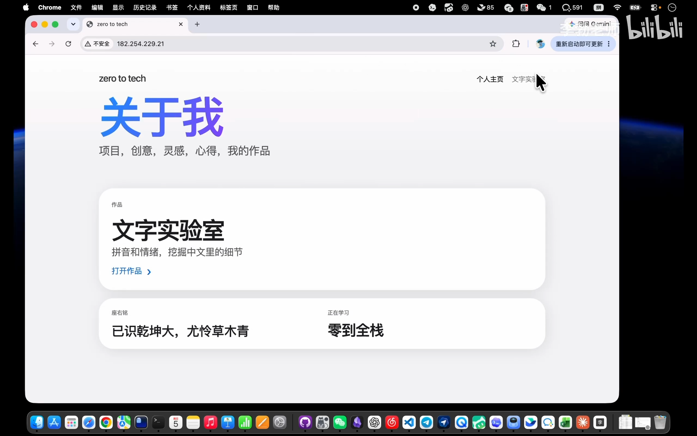
📷 文字实验室写死假数据演示
在 B 站中打开 (00:01:58)
- 点击页面上的“开始分析”按钮毫无反应；
- 界面上的“拼音标注”与“情感倾向分数”全是在前端写死的假数据。
要让网页真正具备自然语言处理与文字计算能力，必须在服务器端运行一个具备计算逻辑的后端程序。而前端与后端之间对话、传递数据的通用语言，正是 API。
无论是在地图导航、天气预报、物流查询，还是在当今爆火的大语言模型、AI Agent 智能体以及跨端应用开发中，API 都是整个软件世界的底层血脉。
实战一：零门槛调用匿名公共 API（ipify）
(参考时间: 03:04)
我们首先调用一个完全免费、无需注册账号、无需申请 Key 的轻量级公共接口——ipify（api.ipify.org）。它只做一件事：查询当前调用者所处的公网 IP 地址。
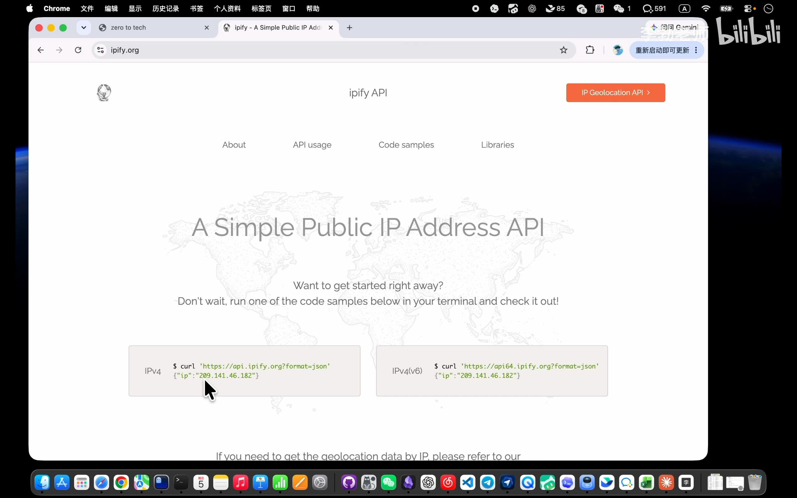
📷 ipify 官网首页展示出口 IP
在 B 站中打开 (00:03:36)
1. 认识终端网络利器：curl
平时我们习惯使用浏览器访问网址，但在服务端或自动化程序中，我们需要在终端中发起网络请求。curl 是一个功能强大的命令行网络工具，能够向指定 URL 发起请求并将服务器的响应结果原样打印在控制台中。macOS、Linux 以及现代 Windows 均已原生内置该命令。
在终端中执行以下命令（当 URL 中包含 ? 等参数定界符时，用双引号包裹网址可避免 Shell 解析异常）：
curl "https://api.ipify.org?format=json"
终端瞬间返回了一小段紧凑的 JSON 数据：
{"ip":"182.254.229.21"}
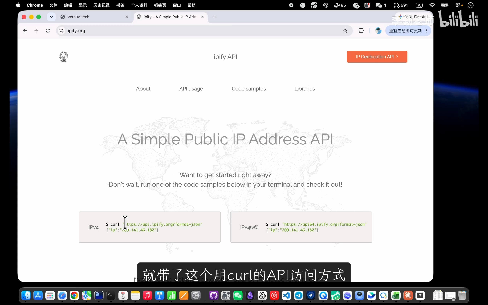
📷 终端运行 curl 请求 ipify 接口
在 B 站中打开 (00:04:41)
2. 验证：浏览器与 API 的本质相通
我们将这串相同的 URL 粘贴至 Chrome 或 Edge 的地址栏并回车：
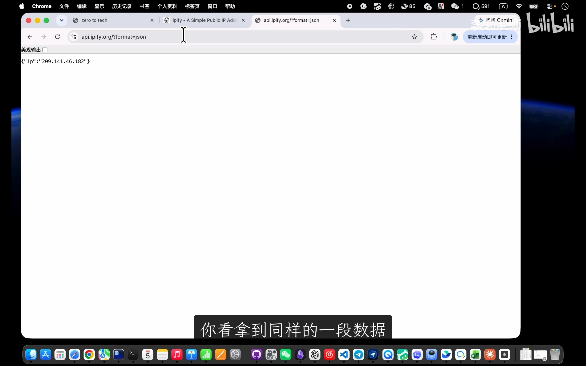
📷 浏览器地址栏直接请求 API 获得相同 JSON
在 B 站中打开 (00:05:50)
页面中呈现出完全一致的 JSON 文本。这印证了一个底层事实：浏览器在地址栏输入网址打开页面的底层动作，本质上也是向服务器发起网络 HTTP 请求并接收响应。
这种无需提供任何身份凭证、直接请求即可获取公共数据的调用方式，被称为匿名调用（Anonymous Call）。
实战二：调用大模型 API（DeepSeek）与鉴权机制
(参考时间: 06:22)
掌握了基础调用后，我们进一步挑战具有商业级鉴权机制的生产级接口——直接通过终端向 DeepSeek 大模型发起对话请求。
1. 为什么大模型 API 需要 API Key
与公共查询不同，大模型推理消耗巨额算力，且需要按 token 计量计费并防止滥用，因此服务端必须核实请求发起者的身份。
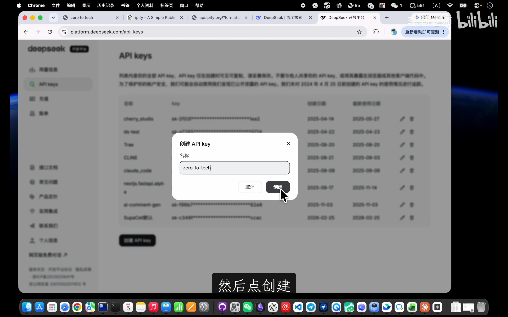
📷 DeepSeek 开放平台创建 API Key
在 B 站中打开 (00:07:30)
- 登录 DeepSeek 开放平台，进入“API keys”管理界面；
- 创建专属密钥，生成一串以
sk-开头的令牌字符串（API Key）； - 安全警示：API Key 相当于访问账户与余额的“数字钥匙”，生成后务必妥善保管，严禁推送到公开 Git 仓库或泄漏给他人。
2. 发起携带身份凭证的 POST 请求
查阅 DeepSeek 官方接口文档，获取对话接口的 curl 规范调用命令：
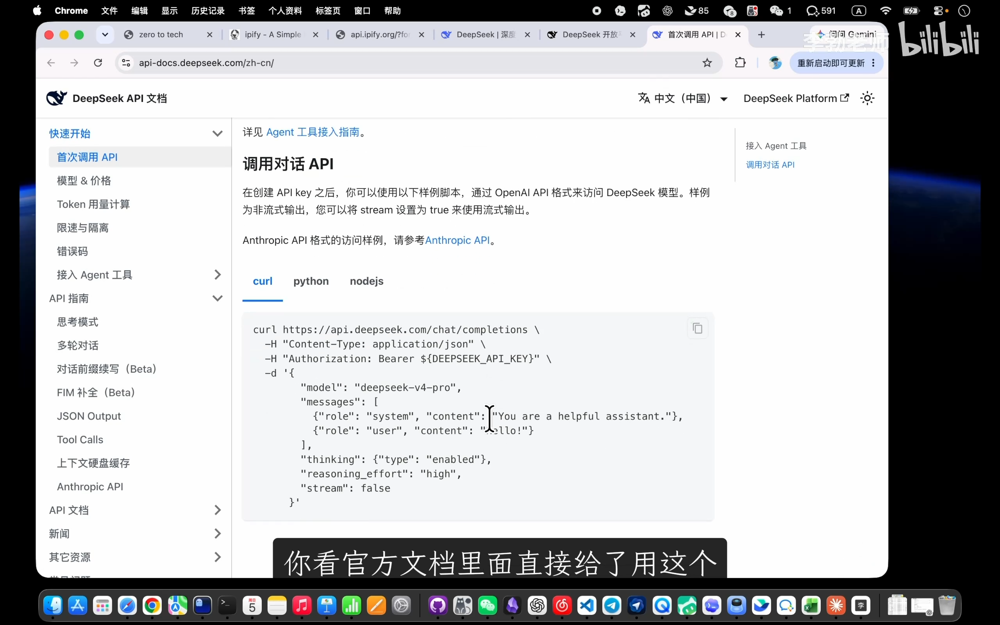
📷 DeepSeek 官方接口文档中的 curl 示例
在 B 站中打开 (00:09:17)
我们将身份 Key 注入请求头，并在请求体内提交问候内容：
curl https://api.deepseek.com/chat/completions \
-H "Content-Type: application/json" \
-H "Authorization: Bearer sk-YOUR_API_KEY" \
-d '{
"model": "deepseek-v4-pro",
"messages": [
{"role": "system", "content": "You are a helpful assistant."},
{"role": "user", "content": "你好，请用一句话介绍下你自己！"}
],
"thinking": {"type": "enabled"},
"reasoning_effort": "high",
"stream": false
}'
执行后，终端成功返回大模型运算后的完整 JSON 数据：
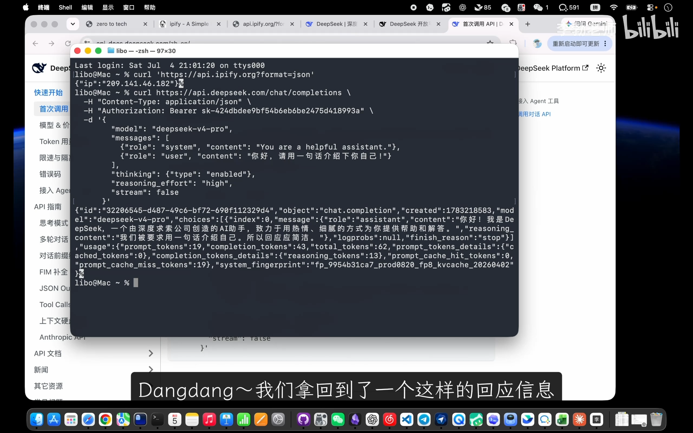
📷 终端收到 DeepSeek 返回的大模型对话响应
在 B 站中打开 (00:11:17)
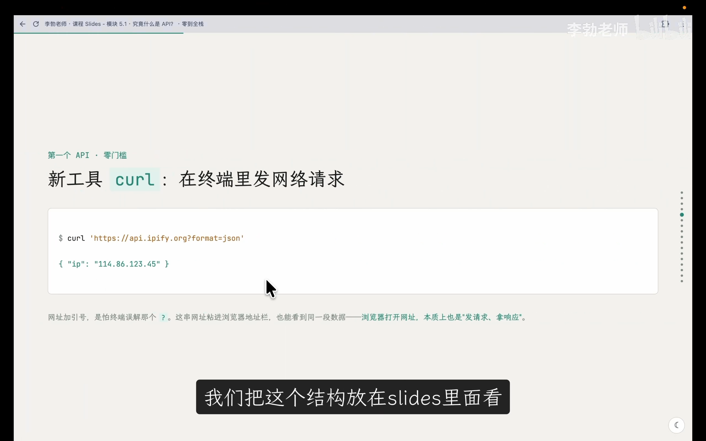
📷 PPT展示请求与响应结构对比
在 B 站中打开 (00:11:42)
在返回的 JSON 结构中，核心回复文本清晰地嵌套在 choices[0].message.content 路径下：
“你好！我是 DeepSeek，一个由深度求索公司创造的 AI 助手，致力于用热情、细腻的方式为你提供帮助和解答。”
我们没有打开任何网页聊天框，仅在终端控制台发送了一段标准的网络请求，就调动了远端数据中心的大模型算力完成推理！
API 的核心本质与通用交互范式
(参考时间: 12:29)
通过上述两次真实调用，我们可以沉淀出 API 的核心本质：
API（Application Programming Interface，应用程序编程接口） 是计算机程序之间相互通信的通道。它把内部复杂的计算与数据逻辑封装成一个公开、固定、标准化的入口，使其他程序能够无需理解内部实现细节，直接按规范索取其能力。
sequenceDiagram
autonumber
actor Client as 调用方 (客户端 / 终端 / 网页)
participant API as API 接口端点 (URL Endpoint)
participant Server as 服务端内部逻辑 (黑盒)
Client->>API: 1. 发起请求 Request (指定 URL + 请求方法 + 携带参数/Key)
API->>Server: 内部调度
Server->>Server: 2. 执行计算、鉴权或检索数据 (调用方无需了解细节)
Server-->>API: 返回计算产物
API-->>Client: 3. 返回响应 Response (通常为结构化 JSON 数据)
Client->>Client: 4. 客户端解析字段，渲染呈现给终端用户
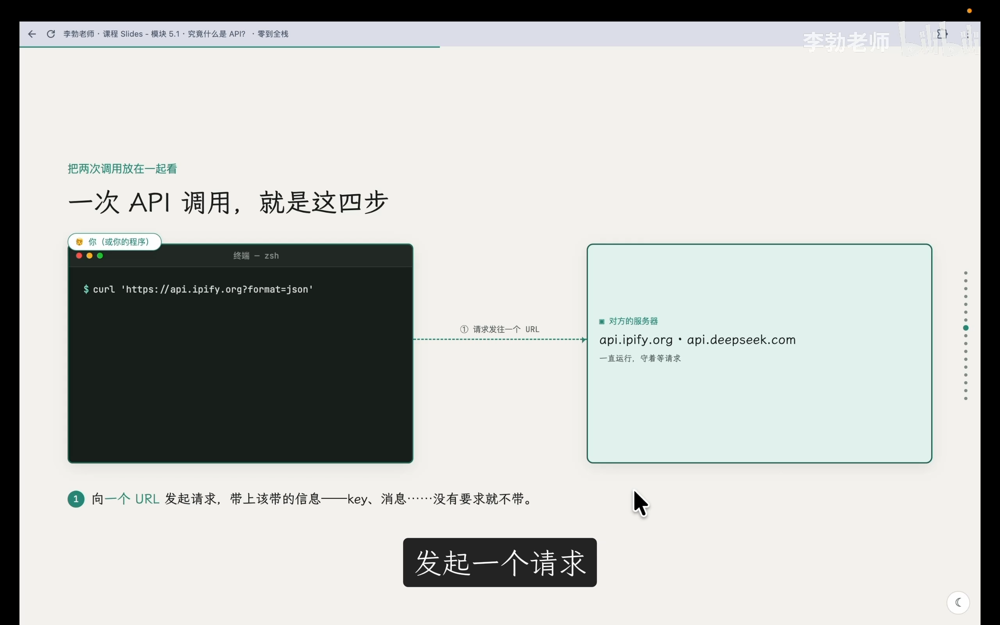
📷 PPT展示调用 API 的标准时序与四步法
在 B 站中打开 (00:12:37)
API 的两大经典请求方法
在 HTTP 协议下，最常用的两种交互动词是： 1. GET（向服务端“索取”数据）： - 如调用 ipify 查询当前 IP。参数通常紧跟在 URL 查询字符串中，请求本身不附带复杂的包体数据。 2. POST（向服务端“提交”数据）： - 如调用 DeepSeek 进行对话。请求必须将待处理的大段文本或参数打包在请求体（Body）中提交给服务器处理。
语言与平台解耦的工业标准
API 最具价值的特性在于语言与技术栈无关性：
- 调用方完全无需关心 DeepSeek 的后端是用 Python、C++ 还是 Go 编写的；
- DeepSeek 的服务端也毫不在意客户端来自 Mac 终端的 curl、浏览器前端的 JavaScript，还是手机 App 中的 Swift/Kotlin。
- 只要遵循统一的 HTTP 协议与 JSON 数据格式，异构系统之间即可无缝协作。
破除神秘感：AI Agent 与 MCP 的底层真相
(参考时间: 16:15)
理解了 API，就能顺势揭开如今各种大热的 AI Agent（智能体） 与 MCP（Model Context Protocol） 的神秘外衣：
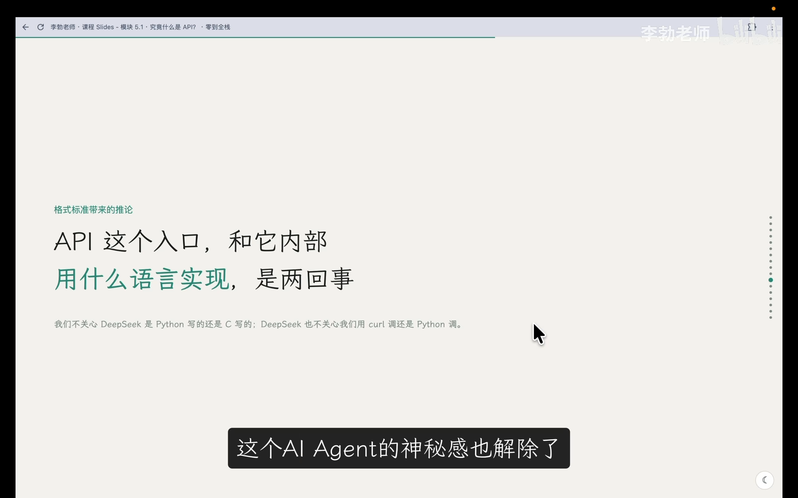
📷 PPT展示 AI Agent 工具调用的本质
在 B 站中打开 (00:16:15)
flowchart TD
LLM["大语言模型 (大脑/决策器)"]
subgraph Tools["Agent 外部工具箱 (本质全是一组标准化 API)"]
T1["搜索网页: Search API"]
T2["天气查询: Weather API"]
T3["执行计算: Python Interpreter API"]
T4["企业协同: 飞书/钉钉 Webhook API"]
T5["MCP 本地服务: Local File/Command API"]
end
LLM -->|根据用户任务意图| Decision{"判断需要借助外部能力"}
Decision -->|生成参数并调用| Tools
Tools -->|返回 JSON 事实数据| LLM
LLM -->|整合数据生成终稿回答| User["用户终端"]
AI 智能体之所以看似“无所不能”，并非大语言模型本身无所不知，而是它具备了工具调用（Function / Tool Calling）的能力。其所谓“上网搜资料”、“查航班”、“收发消息”，底层全是在不知疲倦地自动调用各种现成的外部 API。
全栈项目演进：为文字实验室自研后端 API
(参考时间: 18:43)
回到我们的全栈项目 zero-to-tech，目前项目只有用户端能见到的纯静态前端页面。前端擅长界面排版与点击动画，但缺乏重型计算、分词注音与情感评估的能力。
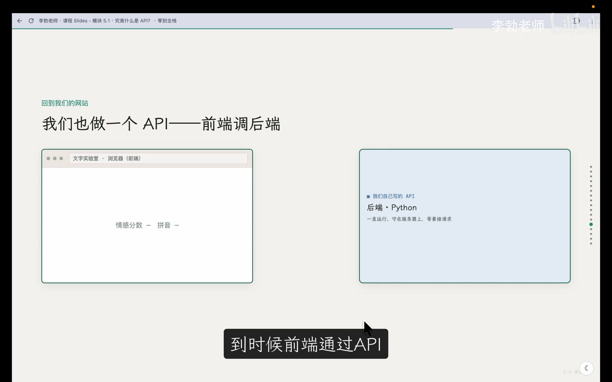
📷 PPT展示前端通过 API 与自研后端架构交互
在 B 站中打开 (00:18:43)
graph LR
subgraph Frontend["前端展示层 (运行于浏览器)"]
WebUI["文字实验室 (TextLab) 界面"]
end
subgraph API_Layer["通信管道 (API)"]
Endpoint["POST /api/analyze<br/>请求体: {'text': '...'}<br/>响应体: {'sentiment': ..., 'pinyin': ...}"]
end
subgraph Backend["后端服务层 (运行于云服务器)"]
NLP["Python 情感分析与分词模型"]
end
WebUI -->|1. 提交用户待测文本| Endpoint
Endpoint -->|2. 调度执行算法分析| NLP
NLP -->|3. 输出结构化打分| Endpoint
Endpoint -->|4. 返回 JSON 数据| WebUI
在接下来的几讲中，我们的主线任务就是： 1. 安装与配置 Python 开发环境； 2. 用 Python 手搓最原始的 HTTP 接口，探究状态码与报文协议； 3. 基于 FastAPI 构建现代异步 API 服务； 4. 将前端“开始分析”按钮真正接通后端 API，完成数据联调闭环！
本章核心要点总结
(参考时间: 21:11)
mindmap
root((5.1 什么是 API))
核心定义
程序间通信的标准公开入口
解耦业务实现，只对外承诺接口契约
经典四步流程
客户端发起请求 Request
服务端黑盒处理
服务端返回响应 Response
客户端消费与呈现数据
常见请求方法
GET: 索取数据 (如 ipify)
POST: 提交复杂数据进行处理 (如 DeepSeek)
核心价值
跨编程语言无关性
AI Agent 工具调用与自动化基石
前后端分离架构的通信桥梁
- 接口的本质：API 是为计算机程序量身定制的通信入口，遵循统一的数据规范（如 JSON），与底层开发语言彻底解耦。
- 动词规范：从服务器读取数据优先采用
GET，向服务器发送待加工数据优先采用POST。 - 全栈分工：前端负责界面与用户交互体验，后端负责守护在服务器上处理复杂运算与数据存储，两者通过 API 协同共生。
在下一章节中，我们将在电脑中搭建 Python 运行环境并探索包管理机制，为亲手编写自研后端 API 做好一切准备！